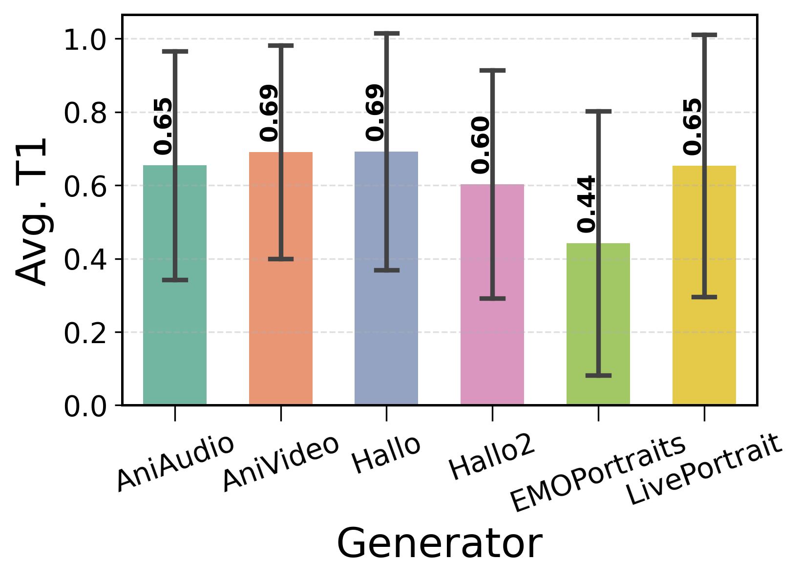

Xinqi Xiong
I am a Ph.D. student in Computer Science at the University of North Carolina at Chapel Hill, working with Pew-Thian Yap. Previously, I worked with Roni Sengupta at UNC and Wei-Lun Chao at The Ohio State University. I received my B.S. in Data Analytics from Ohio State in 2024.
I study what vision models rely on, from metric scale in endoscopy to shortcuts in deepfake detectors and attention in fine-grained recognition. I also build generative and 3D pipelines for endoscopy, pathology, and MRI.
Research
 |
Understanding Model Behavior in Monocular Polyp Sizing Xinqi Xiong, Andrea Dunn Beltran, Junmyeong Choi, Sarah K. McGill, Marc Niethammer, Roni Sengupta MICCAI, 2026 paper / code An audit of monocular polyp sizing that examines metric scale, shortcut cues, and segmentation quality. |
 |
TalkingHeadBench: A Multi-Modal Benchmark & Analysis of Talking-Head DeepFake Detection Xinqi Xiong*, Prakrut Patel*, Qingyuan Fan*, Amisha Wadhwa*, Sarathy Selvam, Xiao Guo, Luchao Qi, Xiaoming Liu, Roni Sengupta WACV, 2026 · *Equal contribution paper / project A benchmark for talking-head deepfake detection under shifts in identities and generators. |
| Stop Holding Your Breath: CT-Informed Gaussian Splatting for Dynamic Bronchoscopy Andrea Dunn Beltran, Daniel Rho, Aarav Mehta, Xinqi Xiong, Raúl San José Estépar, Ron Alterovitz, Marc Niethammer, Roni Sengupta Preprint, 2026 paper CT-informed modeling of respiratory motion for dynamic bronchoscopic reconstruction. |
|
 |
PPS-Ctrl: Controllable Sim-to-Real Translation for Colonoscopy Depth Estimation Xinqi Xiong, Andrea Dunn Beltran, Jun Myeong Choi, Marc Niethammer, Roni Sengupta MMFM-BIOMED Workshop at CVPR, 2025 · Oral paper / code Per-pixel shading conditions diffusion-based translation to preserve geometry while adapting synthetic colonoscopy images to real data. |
| Towards automating risk stratification of intraductal papillary mucinous neoplasms: Artificial intelligence advances beyond human expertise with confocal laser endomicroscopy Somashekar G. Krishna, Ahmed Abdelbaki, Ziwei Li, Stacey Culp, Xinqi Xiong, et al. Pancreatology, 2025 paper AI-based risk stratification of pancreatic lesions using confocal laser endomicroscopy. |
|
| A Simple Interpretable Transformer for Fine-Grained Image Classification and Analysis Dipanjyoti Paul, Arpita Chowdhury, Xinqi Xiong, Feng-Ju Chang, David Carlyn, Samuel Stevens, Kaiya L. Provost, Anuj Karpatne, Bryan Carstens, Daniel Rubenstein, Charles Stewart, Tanya Berger-Wolf, Yu Su, Wei-Lun Chao ICLR, 2024 paper Class-specific queries and cross-attention reveal visual attributes used for fine-grained image classification. |
Posters
Surface Mapping of Cerebellar Microstructure in Infancy
Xinqi Xiong, Khoi Huynh, Junjie Zhao, Sahar Ahmad, Pew-Thian Yap
Society for Neuroscience, 2026 · Abstract and poster